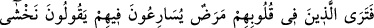
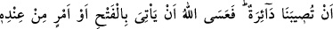
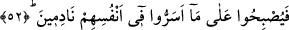
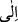

nefsimle başbaşa bırakma.”[1]
Hâfız şöyle der:
Aşk yolunda ölümden sonra da yüzlerce tehlike var
Sakın ola ki “ömrüm bitti, artık kurtuldum” deme
52. Kalplerinde hastalık bulunanların: “Başımıza bir felâket gelmesinden
korkuyoruz.” diyerek onların arasına koşuştuklarını görürsün. Umulur ki Allah bir
fetih, yahut katından bir emir getirir de onlar, içlerinde gizledikleri şeye pişman
olurlar.
Ey Muhammed veya gözleriyle görüp bu hitaba ehil olan herkes! “Kalplerinde
hastalık” nifak hastalığı ve dinde îtikad gevşekliği “bulunanların: “Başımıza bir
felâket gelmesinden korkuyoruz diyerek onların arasına koşuştuklarını görürsün.”
Onların dostluğuna ve yardımına koştuklarını görürsün.
Âyet metninde “ ” harf-i cerrinin “” harf-i cerrine tercih edilmesinin sebebi,
onların dostluklarında kararlı ve azimli olduklarına delalet eder. Bütün gayretleri
dostluklarını daha ileri bir mertebeye ulaştırmaktır. Bunlar yahûdîlerin ve Necran
hristiyanlarının dostluğunu kazanmaya çalışan Abdullah b. Übey ve benzerleridir.
Bunlar zamanın getireceği tehlikelerden emin olmadıkları için böyle yaptıklarını
söyleyerek mü’minlere mazeret ileri sürüyorlardı. Nitekim Allah Teâlâ şöyle buyurur:
“Başımıza bir felâket gelmesinden korkuyoruz diyerek” mâzeret ileri sürüyorlardı.
Yani, zamânın getireceği belâ ve musîbetlerden, işin terse dönüp üstünlüğün kâfirlere
geçip onların duruma hâkim olmalarından korkuyoruz, demektir.
Mânânın şöyle olduğu da söylenmiştir: “Kuraklık ve kıtlık gibi hoş olmayan bir
durumla karşılaşıp da bize borç ve ödünç vermemelerinden korkuyoruz.” Belki de
münâfıklar, mü’minlere “felâket” ile sonraki mânâyı ızhar ediyorlar, fakat içlerinde ilk
mânâyı saklıyorlardı.
“Umulur ki Allah bir fetih” ihsan eder. Bu ifade ile Allah Teâlâ münâfıkların bâtıl
mâzeretlerini reddetmekte, boş arzularını kursaklarında bırakmakta ve mü’minleri
zaferle müjdelemektedir. Çünkü umulur ki anlamındaki “ ” fiili Allah Teâlâ’dan
” fiili Allah Teâlâ’dan
sâdır olduğunda kesin vaad anlamına gelir. Kerim (cömert) kişi umut verince kesinlikle
yedirir, içirir. O halde kerimlerin en kerimi olan Allah umut verince durum nasıl olur?
Âyette sözü edilen fetih, ya Mekke’nin fethi veya Hayber ve Fedek gibi yahûdî
beldelerinin fethidir. Ya da “fetih”ten maksat peygamberin düşmanlarına karşı kesin